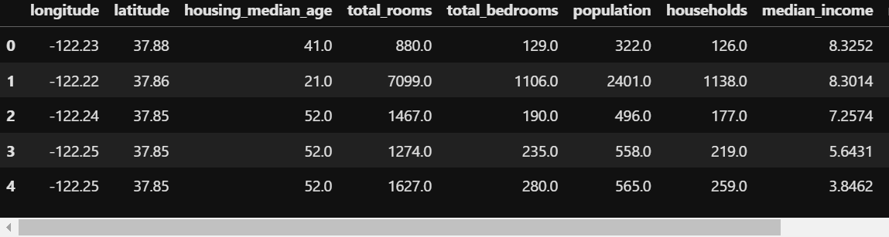
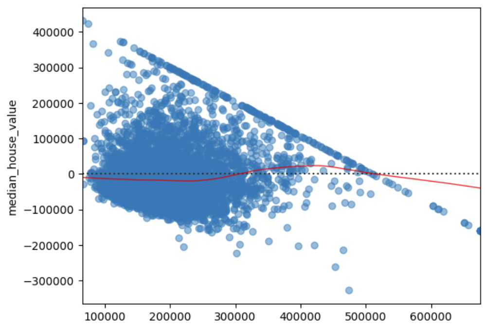
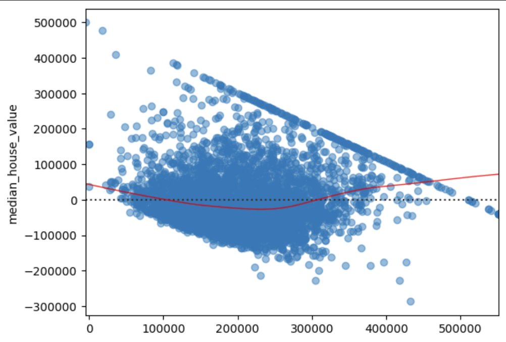
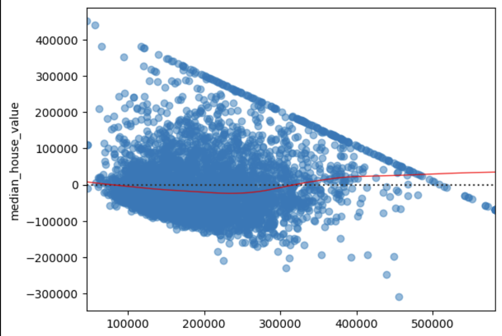

In this blog post, we’ll walk through housing data and apply regression models to predict median house values. Nonlinear regression is a statistical method used to model the relationship between variables through nonlinear functions, allowing for more flexible and complex representations than linear regression. It involves estimating parameters that minimize the difference between observed and predicted values, often requiring optimization techniques.
Our dataset contains 20640 observations and 9 features and 1 target variable(median_house_value). Let’s load the dataset.
# Load the data
data = pd.read_csv("housing.csv")
print(data.head())

To gain insights into the dataset, lets preprocess the data by dropping unnecessary columns and create a scatter plot to visualize the relationship between median income and median house value.
# Drop irrelevant columns and create scatter plot
data = data.drop(["housing_median_age", "households", "total_bedrooms", "longitude", "latitude", "total_rooms", "population", "ocean_proximity"], axis=1)
X = data.drop("median_house_value", axis=1)
y = data["median_house_value"]
plt.scatter(X, y, alpha=0.5)
plt.title('Scatter plot')
plt.xlabel('median_income')
plt.ylabel('median_house_value')
plt.show()
Now, it’s time to build our linear regression model. We’ll split the data into training and testing sets, create the model, and fit it to the training data.
# Model initialization
regression_model = LinearRegression()
# Fit the data(train the model)
regression_model.fit(X_train, y_train)
# Predict
y_predicted = regression_model.predict(X_test)
# model evaluation
rmse = np.sqrt(mean_squared_error(y_test, y_predicted))
r2 = r2_score(y_test, y_predicted)
We obtain a R2 score of 0.446.
The residuals exhibit a clear non straight line, which provides a strong indication of non-linearity in the data
This makes us to do somethhing more to find better fit of the model.

We obtain a tranform by first running
tf = np.sqrt(X_train)
tf1 = np.sqrt(X_test)
We then fit the model by running:
regression_model.fit(tf, y_train)
# Predict
y_predicted = regression_model.predict(tf1)
# model evaluation
rmse = np.sqrt(mean_squared_error(y_test, y_predicted))
r2 = r2_score(y_test, y_predicted)
The obtained R2 score is 0.4385 which is worse than the previous model.
Now we can obtain the residual plot by:
# Assuming y_predicted and y_test are defined and are numpy arrays or similar data structures that support arithmetic operations
residual = y_test - y_predicted
# Corrected call to residplot
sns.residplot(x=y_predicted, y=residual, lowess=True, scatter_kws={'alpha': 0.5}, line_kws={'color': 'red', 'lw': 1, 'alpha': 0.8})
plt.show()

Residual plot for the transformed linear regression is more zigzag than the simple linear regression. This residual plot suggest that transformation makes the relationship more non- linear in nature.
We will now attempt a polynomial regression model.
poly_reg = PolynomialFeatures(degree=2)
X_poly = poly_reg.fit_transform(X_train)
pol_reg = LinearRegression()
pol_reg.fit(X_poly, y_train)
def viz_polymonial():
plt.scatter(X_train, y_train, color="red")
plt.plot(X_train, pol_reg.predict(poly_reg.fit_transform(X_train)))
plt.xlabel('median_income')
plt.ylabel('median_house_value')
plt.show()
return
viz_polymonial()
we get the following plot.
Evaluating the model :
X_p = poly_reg.fit_transform(X_test)
y_predicted = pol_reg.predict(X_p)
# model evaluation
rmse = np.sqrt(mean_squared_error(y_test, y_predicted))
r2 = r2_score(y_test, y_predicted)
We end up with a R2 of 0.449, which is our best score yet. now we run:
# Assuming y_predicted and y_test are defined and are numpy arrays or similar data structures that support arithmetic operations
residual = y_test - y_predicted
# Corrected call to residplot
sns.residplot(x=y_predicted, y=residual, lowess=True, scatter_kws={'alpha': 0.5}, line_kws={'color': 'red', 'lw': 1, 'alpha': 0.8})
plt.show()

Model 3 has the best R2 score but it is also far more complex than model 1. This trade off must be considered while selecting a suitable model.
Source: non-linear-regression